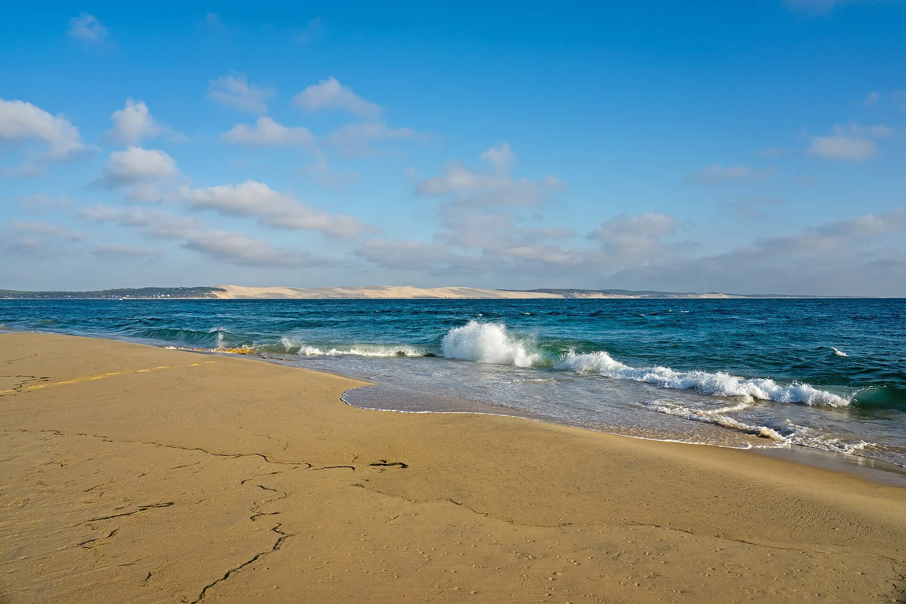

Cap Ferret — La Pointe
Gironde, France · surf

Spot puissant à la pointe du Cap Ferret, à l'entrée du bassin d'Arcachon. Vagues creuses et courants marqués, réservé aux confirmés.
- Lieu
- Gironde, France
- Niveau
- Expert
- Activités
- surf
- Type d'eau
- Mer / océan
- Coordonnées
- 44.63, -1.25 (position approximative du secteur)
Dangers à connaître
- Vagues puissantes.
- Courants très forts près des passes.
- Bancs de sable mouvants.
Le conseil d'Ocean Buddy
Méfie-toi des courants de la passe : reste prudent et évite les gros jours en beach break costaud.
Ouvrir dans Ocean Buddy Télécharger sur l'App Store
Source : Description historique Ocean Buddy · vérification externe en attente.